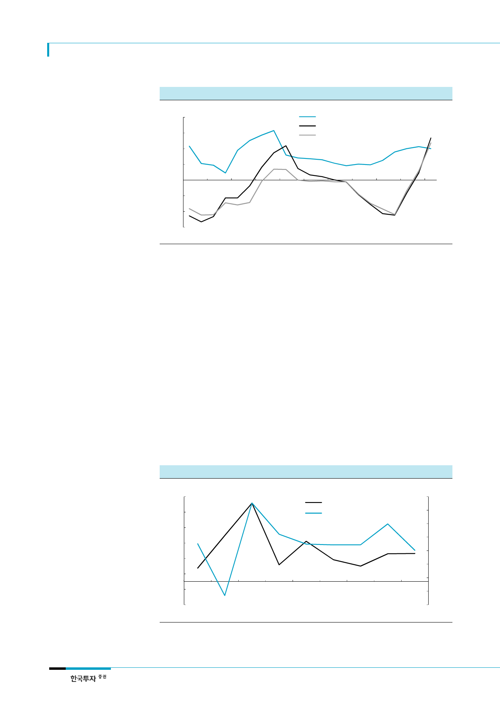

SK하이닉스(000660)
인텔 차세대 CPU 출시와
고용량 서버디램 수요 증가는
예상된 이벤트
[그림 7] 서버디램 컨텐츠 증가율 vs. 서버디램 가격 변화율
(%)
80
60
40
20
0
(20)
(40)
(60)
1Q12
1Q13
서버디램 컨텐츠 YoY 증가율
8GB DDR3 RDIMM 고정가 YoY 변화율
16GB DDR3 RDIMM 고정가 YoY 변화율
1Q14
1Q15
1Q16
1Q17
자료: Gartner, DRAMeXchange, 한국투자증권
서버디램의 수요강세를 인텔의 서버용 CPU 신모델 출시와 고용량 서버디램의 채용 증가로
설명하려는 시도가 있다. 하지만 인텔의 서버용 CPU 신모델 출시는 시장에서 예상하는 일정
이었고, 고용량 서버디램을 사용할 수 있는 메인보드의 변화는 수요강세의 또 다른 결과이지
원인으로 보기는 어렵다.
기본적으로는 서버수요가
서버디램 수요의 선행지표
2. 서버디램 수요의 지표: 서버수요, 그리고 데이터 트래픽
그렇다고 서버디램 수요를 가늠할 수 있는 지표가 없는 건 아니다. PC디램, 모바일디램 수요
가 완제품, 즉 PC 및 스마트폰 수요와 높은 연관성을 보이는 것과 같이 서버디램 수요도 서
버 수요와 상관관계가 높다. 서버디램 수요는 일정 시차를 두고 서버 수요와 상관관계가 높
은 것으로 나타났다. 2015년 서버수요의 강세와 2016년 서버디램 채용량 확대는 과거의 패
턴을 따르는 것이라 할 수 있다. 일부에서는 서버디램의 수요강세가 서버수요와는 상관없는
채용량 증가에 기인하는 것이라 하지만 채용량 증가의 기반인 서버수요가 지속적으로 약세를
보일 경우 채용량 증가에도 한계가 있을 수 밖에 없다. 서버수요는 여전히 서버디램 수요를
좌우하는 가장 중요한 요인이다.
[그림 8] 서버 출하량 증가율 vs. 서버디램 콘텐츠 증가율 (N-1)
(%)
110
90
70
50
30
10
(10)
(30)
2008
2010
2012
서버디램 컨텐츠 YoY 증가율 (좌)
서버 출하량 YoY 증가율 (우)
(%)
20
15
10
5
0
(5)
(10)
(15)
2014
(20)
2016
주: 서버디램 콘텐츠 증가율은 1년 후의 증가율을 선행해 표시했음. 예) 2010년에 대응하는 값은 2010년 서버 출하량 증가
율과 2011년 서버디램 콘텐츠 증가율임
자료: Gartrner, 한국투자증권
4